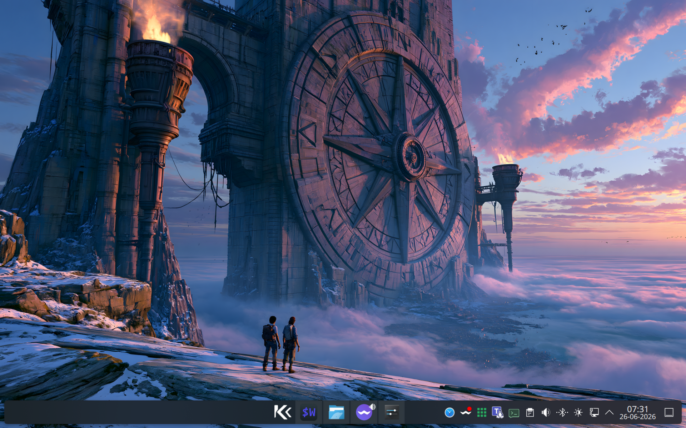

Fedora Atomic · KDE Plasma · Built for work
A practical KDE workstation for technical work.
KompassOS builds on Aurora and adds the tools, hardware support and sensible defaults used by developers, system administrators and network engineers.

Core Features
KDE Plasma
A focused KDE environment built on the Aurora Developer Experience image.
Atomic updates
Background image updates with previous deployments available for rollback.
Practical security
Keeper Password Manager, hardened SSH port handling and the OpenSnitch application firewall.
Three hardware builds
Standard HWE, NVIDIA and Microsoft Surface images maintained from one shared configuration.
Development Tools
Network Tools
- nmap for network discovery
- net-snmp-utils for monitoring
- telnet for connectivity
- screen for terminal sessions
- OpenSnitch application firewall
Virtualization
- libvirt-devel for Vagrant
- virt-manager for VM management
- KVM and QEMU support
- Podman Desktop included
- Waydroid for Android compatibility
Development Environment
- Visual Studio Code pre-installed
- Tilix & WezTerm terminals
- fish, zsh and powershell shells available
- DevToolbox & DevPod included
- Distrobox and Homebrew support
System Improvements
- Custom Plymouth theme
- Plasma Login Manager compatibility safeguards
- Electron apps Wayland fix
- rpm-ostree base system
Pre-installed Applications
Communication & Business
- Google Chrome
- Thunderbird
- Zoom conferencing
- Ferdium messaging hub
- Citrix Workspace
System Management
- Flatseal permissions manager
- DistroShelf
- Warehouse
- MissionCenter
Remote & Peripherals
- Input Leap (KVM switch)
- KTailctl (Tailscale)
- Solaar (Logitech)
Utilities
- DejaDup & Vorta backup
- Fedora MediaWriter
- Skanpage scanner
- FontDownloader & Embellish
Specialized Hardware Support
While Universal Blue announced they're discontinuing HWE (Hardware Enablement) images for ASUS and Surface devices from Fedora 43 onwards, KompassOS continues providing dedicated support for these specialized hardware platforms.
Surface Devices
KompassOS uses the linux-surface kernel to provide optimal support for Microsoft Surface devices, including:
- Surface Aggregator Module (SAM) for keyboard/touchpad
- Touch and pen input processing
- Camera support with Intel ISP processing
- Complete device compatibility matrix
- Custom
libwacom-surfacebuild for Fedora 44 (needed for the Surface Pen), hosted on our mirror while the upstream issue is unresolved
Supported: Surface Book (1-3), Surface Pro (1,3-10), Surface Laptop series, Surface Go (1-3), Surface Studio
Intel IPU6 Camera (Dell)
KompassOS includes a fix for the Intel IPU6 MIPI camera found in many Dell laptops, using the FOSS libcamera stack via WirePlumber:
- Enables libcamera support for Dell XPS, Latitude and Precision
- Configures WirePlumber, Firefox and Chrome
- USB webcams remain functional
Activate with: ujust enable-webcam
Android Phone as Webcam
Use your Android phone camera as a high-quality virtual webcam, even when your phone's OS lacks the native USB webcam mode (e.g. /e/OS or LineageOS). Powered by scrcpy and v4l2loopback:
- Guided setup: ADB instructions, camera selection (front or back)
- Works in Teams, Zoom, Firefox and OBS via PipeWire
- Fully reversible with
ujust disable-phone-webcam - Android only - video stream, no audio
Activate with: ujust enable-phone-webcam
On-Demand Installation
KompassOS includes ready-to-use ujust commands that let you install additional software and configure your system with a single command. Use ujust --choose for an easy interactive menu to browse and select available commands.
Developer Tools
ujust install-claude-codeujust install-codex-cliujust install-gemini-cliujust install-copilot-cliujust install-vagrant
Networking
ujust setup-bridgeujust remove-bridgeujust bridge-status
Hardware & System
ujust install-cups-canonujust generate-iso-kompassos-dx-hweujust enable-webcamujust enable-phone-webcam
Get Started with KompassOS
Choose your build: HWE for standard hardware (including older NVIDIA cards), NVIDIA-optimized for RTX-Series/GTX 16xx graphics cards, or Surface-optimized for Microsoft Surface devices.
Internet Connection
For the best out-of-the-box experience, it's important to properly configure your internet connection during the installation.
If you had no internet during setup, connect first and then run this command to install all Flatpaks:
ujust install-kompassos-flatpaks
Secure Boot Information
If your hardware has secure boot enabled then enroll Universal Blue's secure boot key during the installation process by selecting "Enroll MOK" when prompted.
The secure boot password is: universalblue
Installation note: “Root Account” should stay disabled.